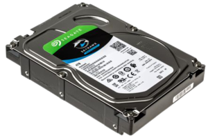

Program, který si koupíme, dostaneme na CD/DVD disku, nebo si ho stáhneme z Internetu. Po vložení instalačního CD/DVD disku se většinou okamžitě spustí instalační program (díky souboru autorun.inf), v případě softwaru staženého z Internetu musíme instalační program spustit sami (ve Windows nejčastěji poklepáním na soubory install.exe či setup.exe). Průvodce instalací (wizzard) si často vyžádá sériové číslo a souhlas s licenčními podmínkami, zeptá se, kam (do jaké složky na disku) se má program uložit a kam se má umístit zástupce programu, případně žádá další informace. Potom instalační program nahraje všechny soubory, ze kterých se program skládá, na pevný disk počítače, provede nutnou konfiguraci (v systémovém registru Windows, konfiguračních souborech) a nakonec vytvoří zástupce programu pro jeho snadné spuštění. K instalaci většiny programů je nutné mít práva správce.
